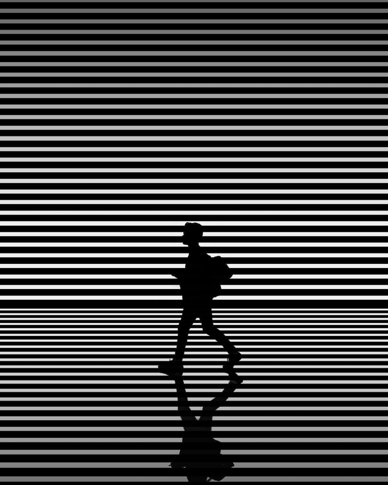

Body Text
Four Important
Considerations
* Meaning, the text that forms the main content
of your document.Though I’ll stop short of calling
it a rule, I strongly recommend using a serif font—not a
sans serif font—for body text. Most books, newspapers,
and magazines use serif fonts for body text. It’s the
traditional choice and still the best choice.
please note
Body Text
is the most common
element of a document.
Therefore, how the body
text looks will have the
most noticeable effect
on the appearance
of the document.
Consequently,
you should
set up the
body text
FIRST.
Start with
font, point size,
line spacing, and
line length, because
those four decisions will
largely determine how
the body text will
look. OK?
